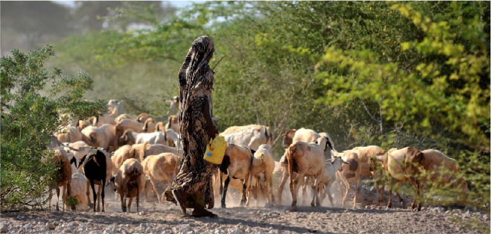

A More Resilient Horn
$1.3 Bn to Help Address Fragility & Climate-Related Shocks

1. Building resilience against desert locust upsurges and other transboundary threats:
- Support control of locust outbreak. Coordinate responses to tackle the locust outbreaks in the Horn; build on investment priorities and concepts developed by the Inter-Governmental Authority on Development (IGAD).
- Support the creation and capacity development of a knowledge and coordination platform for prevention of transboundary pest and disease threats.
- Ensure close regional coordination with institutions that can translate early warning into early actions to prevent future desert locust upsurges and other transboundary pests.
2. Building capacities for ground water management to help communities cope with and adapt to climate shocks ($300 million):
- Technical assistance, capacity building and institutional strengthening: establish groundwater information system for knowledge sharing; support learning and sharing of lessons; create a groundwater development and governance model for transboundary aquifers in the HoA.
- Inclusive innovations: technical assistance for bottom-up solutions; private sector engagement opportunities; novel mechanisms for community engagement to ensure local impact; job creation and entrepreneurship opportunities; technology and youth involvement; gender-inclusive solutions.
3. Promoting resilience in the Borderlands ($250 million):
- Strengthen the social contract in the borderlands: smooth transboundary movements; remove barriers for small-scale trade; mainstream cross-border trade facilitation into national trade policies; simplify trading regimes; deliver quality basic services.
- Support community-based projects for climate change adaptation: technical initiatives to help communities adapt to climate change; participatory processes involving pastoral communities in problem diagnosis and solving; knowledge exchange between communities.
- Promote local livelihoods and enhance social cohesion and conflict prevention: facilitate cross-border trade and create alternate livelihoods for the youth; community and traditional leaders’ role in conflict mediation and resolution.
- Strengthen coordination mechanisms and experience sharing across countries: facilitate regional learning and dialogue through, IGAD.
4. Provide support to agropastoralism ($250 million)
- Strengthening the resilience of pastoral and agropastoral production systems to climate change; support agribusiness development; and enhance adaptive capacity to climate change.
- Provide insurance that would protect livestock in case of drought, including a premium finance for 600,000 households; develop risk infrastructure; provide technical assistance and capacity building and support for credit provisions.